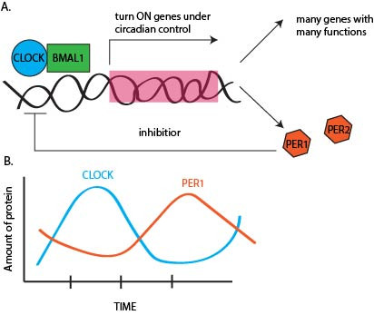
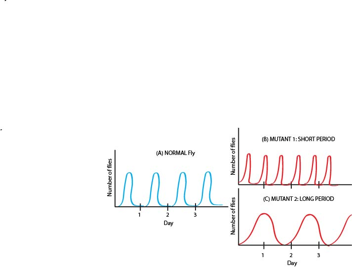

Note: This article is part one of a three part series detailing the molecular workings and physiological implications of the circadian rhythms. This article will set the stage for later articles detailing the role of circadian rhythms in regeneration and repair of tissues and in sleep cycles.
Part 2: Circadian rhythym and sleep
Rhythms are a part of our life. We are creatures of habit; you probably do many activities around the same time every day, including waking up, eating, and exercising. Although these are choices that you make, there is also an underlying molecular ‘clock’ that controls many of your body’s unconscious processes, like body temperature and detoxification. Components of this molecular clock create what is known as circadian rhythms. Circadian rhythms are approximately on a 24-hour loop related to the day/night cycle on Earth, and include both changes in physiology and behavior that determine things like how awake or hungry you feel. Alteration of these rhythms has important implications for disease and aging. Below, we will discuss the molecular players in this process, how the clock is synchronized to daily cues and the possible evolutionary implications of having such a clock system.
How did scientists discover the circadian clock? The earliest accounts of diurnal (i.e. daily) movements date back to the 4th century B.C.E., when Androsthenes, one of the admirals of Alexander the Great, described the cyclic movements of tree leaves from day to night. If you were to time-lapse image your plant during a 24 hour period, you would notice that its leaves gradual move up during the day and down toward the night time - one of the most dramatic examples of this is the ‘prayer’ plant (you can view a video here). In 1729, French astronomer de Mairan reported that these daily leaf movements could persist for some time in constant darkness, suggesting that there was an innate, internal mechanism to keep them going. More descriptions of rhythmic behaviors would follow. However, an understanding of how these rhythms might be occurring did not come until 1971, through the work of Ron Konopka and Seymour Benzer (1).
Konopka was a graduate student in the lab of Benzer and wanted to apply the lab’s technique of inducing mutations in the DNA of fruit flies (Drosophila) to study rhythmic behaviors. The fly circadian clock is set to a 12 hour light/dark cycle. Flies used for research purposes are kept in controlled light-dark rooms that mimic these cycles. One rhythmic behavior in flies is called the eclosion rhythm, i.e. the time of day when the adult flies hatch from their pupal case after maturation. If you measure the number of flies hatching over the course of the day for several days, you will notice a peak near dawn (sketched in Figure 1, plot A).

Figure 1: Altered eclosion rhythms in mutants flies help to identify PERIOD gene.
Using their method for introducing mutations, Konopka and Benzer isolated some mutant flies that had alterations in the eclosion rhythm (Figure 1, plots B and C). One set of mutants had a shorter period (i.e. time between hatching of flies) while another set of mutants had a longer period of time between hatches. They then mapped these mutations back to genes in the fly genome, among them a gene that would be called PERIOD.
These experiments allowed them to understand the genetic basis of circadian behavior in ways that had eluded previous research. Although it might seem strange at first, Drosophila was the perfect model system for this work, because at the time, scientists had a very good understanding of their genetics and how to manipulate them. This seminal work paved the way for later work in 1994 by the lab of Joseph Takahashi and colleagues who, similarly to Konopa and the flies, made mutant mice that had altered sleep cycles (2) and were able to identify the CLOCK gene in mammals (3), opening the door to understanding to how circadian rhythms may work in humans.
In the decades since the pioneering work of Konopka and Takahashi, scientists have gained many more insights into how cells make the ‘molecular clocks’ responsible for synchronizing the many activities of your body. Cells use a series of gene and protein circuits to make an oscillator. The principles behind an oscillator relate back to physics and are used to define a set of components that can make something that cycles. For example, a child sitting on a swing going back-and-forth is a form of an oscillator that has a series of repeating features (for example, how quickly one complete back-and-forth motion takes). Similarly, your body sets up a system made of up of proteins and genes that controls your internal sense of ‘time’.
How do we know that the levels of these proteins oscillate? We can measure the levels of the proteins or mRNA products at different times in the day and determine when they are high or low. One particularly fascinating tool for studying the clock is the use of transgenic organisms, that is organism where we have inserted DNA from a foreign source. For example, a plant’s genome can be engineered to carry a DNA sequence encoding a so-called fusion protein. As the name suggests, this DNA piece codes for two proteins that have been ‘glued’ together. In this case, an important circadian rhythm regulator can be attached to a light-producing protein, luciferase. This means that whenever the regulator is produced and active, the light-producing protein is also made and researchers can look at this signal by measuring the amount of light. This so termed ‘reporter plant’ allows researchers to test how genetic or environmental changes can affect the circadian rhythm by using the changes in light signal as a proxy for the circuit. An example of the data collected from these glowing reporter plants can be seen here. A similar technology has been used in mice to study the mammalian circadian clock (4) and has been extremely important for our understanding of how the circadian clock is controlled in different tissues.

Figure 2: How CLOCK and BMAL1 work together to turn on genes and make a molecular clock.
Two of the core proteins in the mammalian circadian oscillator are CLOCK and BMAL1. When CLOCK and BMAL1 bind to each other, and then together bind to DNA , they turn on a series of target genes (i.e they function as transcription factors, Figure 2A). These target genes generally act as regulators of other proteins related to many different types of physiological responses, creating a cascade. For example, the activities of CLOCK:BMAL1 can turn on another transcription factor which then results in the production of the genes necessary for making the hormone melatonin that controls our wakefulness. Although this sounds a little convoluted, biological systems use this hierarchy of gene regulation over and over again when they need to turn on large scale responses.
Another important group of targets are the PERIOD proteins: PER1 and PER2 (Figure 2A). These are in the same evolutionary family as the fly PERIOD proteins discovered by Konopka. PER1 and PER2 inhibit the CLOCK:BMAL1 complex, preventing the transcription of the cascade of target genes. This creates a negative feedback loop that controls the cycle and determines the period of the oscillation - how long it takes to swing back and forth (Figure 2B). Thus, the levels of CLOCK:BMAL1 and PER1/2 cycle back and forth each day.
One key aspect of circadian rhythms is that the must be entrainable - i.e. they are able to be reset by external cues. You have already experienced this if you have traveled across time zones. While you maybe were jet-lagged for the first few days, after a week or so, your body adjusts to the new time zone and your rhythms synch with the local time. Things that can reset the clock are known as zeitgebers – a German word meaning time giver. Light and dark are one example of zeitgebers. In many tissues temperature and energy status (i.e. food intake) affect circadian rhythms. In muscle, physical activity can also be a cue for entraining the clock. Mouse studies from the 1990s (5) showed that access to exercise (by addition of a wheel to the cage) can shift the phase of the circadian rhythm. These findings were also recently validated as having long lasting effects out to 16 days post exercise (6).
You might imagine that if each of the 1 trillion or so cells in your body had its own individual CLOCK:BMAL1 oscillator entraining to individual cues, things might get a little messy and uncoordinated. Additionally, it would be a little inconvenient to be tired during the daytime (when you could be hunting and gathering food) and awake during the nighttime (when you can’t see anything). So who acts as the clock master that syncs all the clocks of the body to the daylight cycle?
The mammalian circadian system is organized in a hierarchy, ultimately controlled by the suprachiasmatic nucleus (SCN). The SCN is a region of roughly 20,000 neurons in the hypothalamus (a region of the brain) that is trained by the daily light/dark cycles of the Earth. The SCN receives input from the retina in the eye that synchronizes its timing to the external light cues. It can then pass this information onto other tissues that are not light sensing using hormones and other cues. Due to the large number of neurons controlling the SCNs and their high degree of interconnectivity, the SCN is not sensitive to most other signals in the body. However, tissue specific clocks are sensitive to the other regulators mentioned above. In this way, the SCN can synchronize everything while still allowing tissues with specific functions, like the muscle, to respond to tissue specific inputs.
As the examples in this article have pointed out, the role of circadian rhythms is not limited to mammals – in fact these oscillations have been found in birds, insects, plants and cyanobacteria. Why might such disparate species have evolved a similar mechanism? One hypothesis is that the need to respond to a changing environment that consists of a light and a dark phase, has imposed a certain set of requirements on every organism living on Earth. Circadian clocks enhance the ability of organisms to survive in their ever-changing environments by allowing them to anticipate periodic events such as the availability of food, light and mates. Therefore, it is not that surprising that many aspects of our basic physiology, such as regulation of digestion and detoxification, blood pressure, body temperature, sleep and wakefulness are controlled by the circadian clock. We want our body to be most active when there is daylight and to rebuild during the night. These considerations also raise another interesting question: how might our circadian rhythms change if the human race were to colonize other planets with different day/night cycles? NASA is currently working on a project to understand the effects of space and space travel on human circadian rhythms. Certainly, given our clear dependence on these mechanisms, one of the challenges of the space exploration age will be dealing with the little molecular clocks which evolved to tick on Earth.